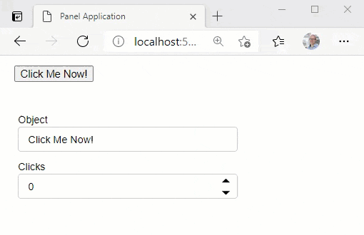
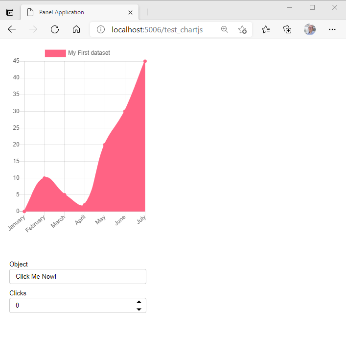

Developing Custom Models#
Panel ships with a number of custom Bokeh models, which have both Python and Javascript components. When developing Panel these custom models have to be compiled. This happens automatically with pip install -e . or python setup.py develop, however when runnning actively developing you can rebuild the extension with panel build panel. The build command is just an alias for bokeh build; see the Bokeh developer guide for more information about developing bokeh models or the Awesome Panel - Bokeh Extensions Guide
Just like any other Javascript (or Typescript) library Panel defines a package.json and package-lock.json files. When adding, updating or removing a dependency in the package.json file ensure you commit the changes to the package-lock.json after running npm install.
Adding a new Custom Model#
This example will guide you through adding a new model.
We will use the the ChartJS model as an example. But you should replace ChartJS and similar with the name of your model.
Here we will add a simple Button model to start with. But we call it ChartJS.
My experience is that you should start small with a working example and the continue in small, incremental steps. For me it did not work trying to copy a large, complex example and refactoring it when I started out learning about Custom Models.
Create a new branch
chartjs.Add the files and code for a minimum working model. This includes
A Panel Python model
A Bokeh Python and TypeScript model
Add the Panel Python Model#
Add the file panel/pane/chartjs.py and the code
import param
from panel.widgets.base import Widget
from ..models import ChartJS as _BkChartJS
class ChartJS(Widget):
# Set the Bokeh model to use
_widget_type = _BkChartJS
# Rename Panel Parameters -> Bokeh Model properties
# Parameters like title that does not exist on the Bokeh model should be renamed to None
_rename = {
"title": None,
}
# Parameters to be mapped to Bokeh model properties
object = param.String(default="Click Me!")
clicks = param.Integer(default=0)
Add the Panel model to panel/pane/__init__.py
from .chartjs import ChartJS
Add the Bokeh Python Model#
Add the file panel/models/chartjs.py and the code
from bokeh.core.properties import Int, String
from bokeh.models import HTMLBox
class ChartJS(HTMLBox):
"""Custom ChartJS Model"""
object = String()
clicks = Int()
Add the Bokeh model to panel/models/__init__.py file
from .chartjs import ChartJS
Add the Bokeh TypeScript Model#
Add the file panel/models/chartjs.ts and the code
// See https://docs.bokeh.org/en/latest/docs/reference/models/layouts.html
import { HTMLBox, HTMLBoxView } from "@bokehjs/models/layouts/html_box"
// See https://docs.bokeh.org/en/latest/docs/reference/core/properties.html
import * as p from "@bokehjs/core/properties"
// The view of the Bokeh extension/ HTML element
// Here you can define how to render the model as well as react to model changes or View events.
export class ChartJSView extends HTMLBoxView {
model: ChartJS
objectElement: any // Element
connect_signals(): void {
super.connect_signals()
this.connect(this.model.properties.object.change, () => {
this.render();
})
}
render(): void {
super.render()
this.el.innerHTML = `<button type="button">${this.model.object}</button>`
this.objectElement = this.el.firstElementChild
this.objectElement.addEventListener("click", () => {this.model.clicks+=1;}, false)
}
}
export namespace ChartJS {
export type Attrs = p.AttrsOf<Props>
export type Props = HTMLBox.Props & {
object: p.Property<string>,
clicks: p.Property<number>,
}
}
export interface ChartJS extends ChartJS.Attrs { }
// The Bokeh .ts model corresponding to the Bokeh .py model
export class ChartJS extends HTMLBox {
properties: ChartJS.Props
constructor(attrs?: Partial<ChartJS.Attrs>) {
super(attrs)
}
static __module__ = "panel.models.chartjs"
static init_ChartJS(): void {
this.prototype.default_view = ChartJSView;
this.define<ChartJS.Props>(({Int, String}) => ({
object: [String, "Click Me!"],
clicks: [Int, 0],
}))
}
}
Add the ChartJS typescript model to panel/models/index.ts
export {ChartJS} from "./chartjs"
Build the Model#
You can now build the model using panel build panel. It should look similar to
(base) root@475bb36209a9:/workspaces/panel# panel build panel
Working directory: /workspaces/panel/panel
Using /workspaces/panel/panel/tsconfig.json
Compiling styles
Compiling TypeScript (45 files)
Linking modules
Output written to /workspaces/panel/panel/dist
All done.
Test the Model#
Add the file panel/tests/pane/test_chartjs.py and the code
import panel as pn
def test_constructor():
chartjs = pn.pane.ChartJS(object="Click Me Now!")
def get_app():
chartjs = pn.pane.ChartJS(object="Click Me Now!")
return pn.Column(
chartjs, pn.Param(chartjs, parameters=["object", "clicks"])
)
if __name__.startswith("bokeh"):
get_app().servable()
Run pytest panel/tests/pane/test_chartjs.py and make sure it passes.
Serve the app with panel serve panel/tests/pane/test_chartjs.py --auto --show
You have to hard refresh your browser to reload the new panel .js files with your ChartJS model. In Chrome I press CTRL+F5. See How to hard refresh in Chrome, Firefox and IE for other browsers.
Now you can manually test your model

Save your new Model#
Finally you should save your changes via git add . and maybe even commit them git commit -m "First iteration on ChartJS model"
Build a small HTML Example#
In the beginning of your journey into Custom Models there will be things that break and difficulties figuring out why. When you combine several new things it can be really difficult to figure out why. Is the problem Panel, Bokeh, Python, Javascript, Node or ….?
So I suggest creating a small, working example in plain HTML/ JS before you start combining with Panel and Bokeh Models.
Please note the below example works out of the box. It is not always that easy importing javascript libraries in a Notebook. So it can be a good idea to work in a .html file first.
%%HTML
<script src="https://cdn.jsdelivr.net/npm/chart.js@2.8.0"></script>
<div class="chart-container" style="position: relative; height:400px; width:100%">
<canvas id="myChart"></canvas>
</div>
<script>
var ctx = document.getElementById('myChart').getContext('2d');
var chart = new Chart(ctx, {
// The type of chart we want to create
type: 'line',
// The data for our dataset
data: {
labels: ['January', 'February', 'March', 'April', 'May', 'June', 'July'],
datasets: [{
label: 'My First dataset',
backgroundColor: 'rgb(255, 99, 132)',
borderColor: 'rgb(255, 99, 132)',
data: [0, 10, 5, 2, 20, 30, 45]
}]
},
// Configuration options go here
options: {
responsive: true,
maintainAspectRatio: false,
}
});
</script>
Using the Javascript Model#
Getting something shown using the ChartJS js library would be the next step. It might require a bit of experimentation, looking at other examples, google or support from the community.
Here I found that a good step where the following changes
Import the Javascript Library#
Update test_chartjs.py tp
import panel as pn
def test_constructor():
chartjs = pn.pane.ChartJS(object="Click Me Now!")
def get_app():
chartjs = pn.pane.ChartJS(object="Click Me Now!")
return pn.Column(
chartjs, pn.Param(chartjs, parameters=["object", "clicks"])
)
if __name__.startswith("bokeh"):
pn.config.js_files["chartjs"]="https://cdn.jsdelivr.net/npm/chart.js@2.8.0"
get_app().servable()
Render the Plot#
In the chartjs.ts file add import { canvas, div } from "@bokehjs/core/dom"; at the top and change the render function to
render(): void {
super.render()
var object = {
type: 'line',
data: {
labels: ['January', 'February', 'March', 'April', 'May', 'June', 'July'],
datasets: [{
label: 'My First dataset',
backgroundColor: 'rgb(255, 99, 132)',
borderColor: 'rgb(255, 99, 132)',
data: [0, 10, 5, 2, 20, 30, 45]
}]
},
options: {
responsive: true,
maintainAspectRatio: false,
}
}
var chartContainer = div({class: "chartjs-container", style: "position: relative; height:400px; width:100%"})
var chartCanvas = canvas({class: "chartjs"})
chartContainer.appendChild(chartCanvas)
var ctx: any = chartCanvas.getContext('2d');
new (window as any).Chart(ctx, object);
this.el.appendChild(chartContainer)
}
Build and Test#
Run panel build panel and hard refresh your browser. You should see

Save Your Model#
Remember to stage and/ or commit your working changes.
Next Steps#
Enable setting the Python
ChartJS.objectparameter to any ChartJS dictionary.Checkout support for different sizing modes, responsiveness and window maximize.
Configure the javascript, css, .. dependencies in the Bokeh Python File.
…..
Check List#
When you develop and test your model eventually you should consider implementing and testing
Dynamic updates to the
objectparameter and any other parameters added.Resizing
Does it resize when
widthis changed dynamically?Does it resize when
heightis changed dynamically?Does it work with
sizing_mode="stretch_width"etc.
Themes (Light, Dark)
Window Resizing, Window Maximizing, Window Minimizing.
Streaming of Data. Is it efficient?
Events (Click, Hover etc.)
Consider supporting the Python Wrapper (ECharts -> PyECharts, ChartJS -> PyChart.JS)
Tests
Reference Notebook
Communication also to for example ChartJS community and developers.
Tips and Tricks#
Work in small increments and stage your changes when they work
Remember to
panel build paneland hard refresh before you test.Add console.log statements to your
.tscode for debugging.Use the Developer Tools console to see the
console.logoutput and identify errors. In my browsers I toggle the Developer Tools usingCTRL+SHIFT+I.Find inspiration for next steps in the existing Panel Custom Models. For
ChartJSone of the most relevant custom models would beEcharts. See Panel echarts.py, Bokeh echarts.py and echarts.ts.Use the existing documentation
Use Google Search. You don’t have to be an expert javascript or typescript developer. It’s a very small subset of those languages that is used when developing Custom Models.
Ask for help in PyViz Gitter, HoloViz Discourse and Bokeh Discourse forums.